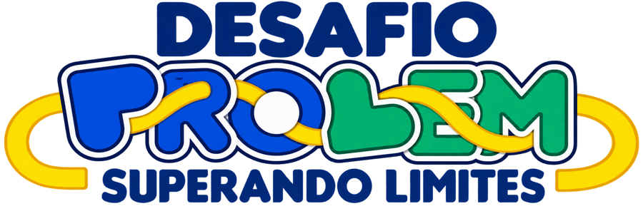

O que os servidores da rede estadual de ensino do Tocantins disseram sobre o Desafio PROBEM · Superando Limites.


Relatório · Novembro 2026O Superando Limites na Secretaria da Educação faz parte do PROBEM e integra a política de qualidade de vida e valorização dos professores, técnicos e contratados de toda a rede estadual de ensino do Tocantins.
Corrida, caminhada ou ciclismo.
Cada servidor estipula quantos km vai cumprir em 30 dias.
As atividades são acompanhadas pelo app, semana a semana.
A conquista do mês chega na forma de uma medalha.
+30% acima do previsto
E um número grande de servidores já querendo entrar no projeto no próximo ano.
servidores responderam à pesquisa
municípios diferentes representados
das respostas vieram de fora de Palmas
110 de 110 participantes responderam “Sim, quero que o desafio continue”.
Pergunta: “Você atingiria este nível de regularidade se não estivesse participando do desafio?”
Em setembro me inscrevi na meta de 30 km e consegui superar. Em outubro, renovei a meta de 30 km e alcancei incríveis 52 km! E agora, em novembro, já na primeira semana, atingi mais uma vez minha meta.
Edinair Menezes Brandão · Professora · Araguatins
Onde o desafio contribuiu com a saúde (% dos participantes · podiam marcar mais de uma opção)
dizem que ações como esta contribuem bastante para a sua saúde
acreditam que o desafio melhora bastante a integração entre os servidores
O Desafio PROBEM Superando Limites é uma iniciativa que me tirou da zona de conforto. Consegui perder 5 quilos em 3 meses e criar o hábito de correr nas ruas da cidade onde moro. Hoje, estou feliz e animado pelos próximos desafios. Obrigado, SEDUC.
Eu amei essa iniciativa porque ajudou muitas colegas minhas que eram sedentárias a se movimentarem. Também gostei demais da organização, do pessoal do suporte, que sempre me atendeu com a maior presteza. Parabéns! Um milhão de estrelas para vocês!
Não tenho nada a criticar, muito pelo contrário, só tenho a agradecer por fazer parte desse projeto tão especial. Ele tem me ajudado muito, não só na minha saúde, mas também na minha autoestima, no meu bem-estar e na minha qualidade de vida.
O desafio PROBEM só fez bem e fortaleceu laços de companheirismo entre os colegas na unidade escolar em que trabalho. Aqui ele foi o responsável por fazer as pessoas sorrirem mais e se desafiarem. Sábado, ao invés de ficarmos em casa, estávamos no mundo praticando exercícios e superando os limites do corpo. Somos inspiração!
Iniciativas como essa fazem a diferença, pois cuidar da saúde e incentivar hábitos saudáveis também é uma forma de valorizar quem trabalha diariamente pelo desenvolvimento do nosso Estado.
Com o Desafio PROBEM consegui sair do sedentarismo, melhorando a qualidade de vida e minha saúde. O desafio serve como um apoio e incentivo para a permanência da atividade física em minha vida.
As sugestões deixadas na pesquisa mostram servidores que querem mais do projeto, e não menos.
Pedidos para que o desafio não fique só em alguns meses e entre no calendário anual da rede.
Corridas e encontros nas cidades e nas SREs, aproximando quem mora longe de Palmas.
Brindes, camisetas do projeto e premiação com categoria própria para os servidores da educação.
Fazer o projeto chegar a mais servidores e acompanhar o desempenho em um painel digital.
Na minha visão, esta ação deverá fazer parte do calendário escolar, estar prevista anualmente.
Maria Leda Melo Lustosa Pereira · Professora · Palmas
Obrigado à SEDUC e ao PROBEM pela parceria, e a cada servidor que transformou a meta do mês em conquista.